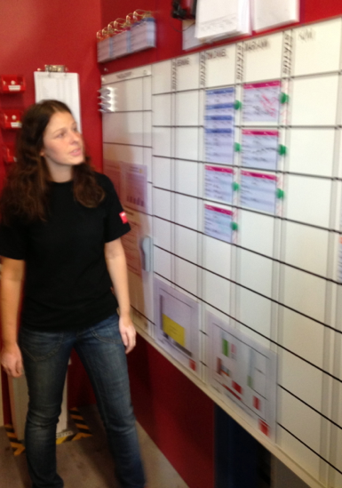

Ressurssider
Systemtenkning med Obeya
Gratis ressurser som følger Bjarne Berg Wigs bok kapittel for kapittel: videoer, lenker til vitenskapelige publikasjoner, maler og læreeksempler. Tips og spørsmål: post@learnorg.global.
16 kapitler21 nedlastinger6 videoerEnglish · Norsk
Introduksjon: Hvorfor Obeya og hvorfor nå?
Gode videoer om Systemtenkning.
Nøkkelresurser
Les sammendrag av Laloux tekst (PDF)

Kelly allan foredrag om Deming basics (foredrag på Deming konferanse i 2014.
Foredrag av Am C. Edmonson from Harvard Business School
Hva er en lærende organisasjon?
En lærende organisasjon er et komplekst system som evner å tilpasse seg gjennom felles læring.
Her bruker vi et rammeverk kalt VMCL. Dette er egentlig rammeverket for ALLE organisasjoner. Men ved å være dette bevisst setter vi organisasjonen bedre i stand til å lære.
Rammeverket for en hvilken som helst organisasjon er VMCL eller Visjon-oppdrag - kapasitetssystemer og læring. Kapasitet og kultur er
vår organisasjon med folk, utstyr, prosedyrer, materialer, kunnskap osv. Det vi er. Læring er for å optimalisere og forbedre vår kapasitet til å utføre vårt oppdrag for å nå visjonen.
Obeya: se sammen, tenke sammen, prøve sammen
Obeya er et virtuelt eller tradisjonelt rom for å løse komplekse problemer gjennom å praktisere tre enkle regler: Se sammen, tenke (reflektere) sammen og prøve sammen.
Vi skal gå grundigere inn på SE-TENKE-PRØVE, men her er noen videoer og linker som kan gi dere dypere forståelse for gamle og nye vitenskapelige oppdagelser.
Obeya er et SE TENKE PRØVE lærings"rom" der vi forsøker å forstå og løse komplekse problemer.
Her må vi også se på Daniel Kahneman og Amor Tverskys oppdagelse av hjernens system 1 og 2 og våre medfødte evne til skeivheter og feiltolkninger
DSRP er tenkefunksjoner vi kan bruke mer systematisk for å tilpasse oss nærmere virkelig verden. I Obeya bruker vi disse funksjonene ved blant annet å beskrive dem med systemkart som illustrert på dette bildet.
De tre enkle reglene går som en rød tråd gjennom boka..

Se Dr. Derek Cabrera gjennomgår nyere forskning om DSRP
Hva kan vi lære av Toyota?
Obeya hadde sin opprinnelse når Toyota skulle utvikle Lexus og seinere verdens første hybrid, Prius. Studiet av Toyota avdekker de underliggende prinsippene vi presenterer i kapittel 3. Les artikkelen av Tanaka et al som forklarer noen av de grunnleggende metodene i Obeya. (se figuren under)
De grunnleggende elementene i Toyota Production System
Illustrasjon på Obeya grunnfinksjoner fra Tanaka artikkelen (over)
Her finner du en samling av vitenskapelige artikler om Obeya
Se sammen: hvorfor samsyn?
Å tegne en idé eller en ting og sette den sammen med andre
ideer eller ting gjør oss bedre i stand til å forstå helheter,
relasjoner, hvordan ting henger sammen og til å se underliggende,
ofte skjult informasjon. Ved å kartlegge og visualisere
systemene forstår vi dem bedre.
Deming tegnet dette diagrammet som illustrerte sammenhengene i et produksjonssystem. Dette diagrammet "tente Japan" som Deming skrev i New Economics. Dette er fundamentalt i systemtenkning og Obeya.
Mange har erfart betydningen av å synliggjøre ved å bruke verdistrømskart. VSM kartet avdekker mange forbedringsområder og er et av grunnvertøyene i Lean utvikling. Se PPTX om VSM
Vitenskapelig paper av Dr. Derek Cabrera om betydningen av å visualisere. Artikkelen refererer til en rekke andre studier som underbygger betydningen av å visualisere. (PDF dokument)
Her er noen av dem:
- Eden, C.(1992) On the Nature of Cognitive Maps. Journal of Management
- Studies,29(3):261-265.
- Santiago,H.C.(2011) Visual Mapping to Enhance Learning and Critical
- Thinking Skills. Optometric Education,36 (3),125-13
- Wileman,R.E.(1993) Visual Communicating. Englewood Cliffs NJ:Educational
- Technology Publ.
- Williams,C.G.(1998) Using Concepual Maps to Assess Conceptual
- Knowledge of Function. Journal of Research in Matematics Education,
Tenke sammen
De fire grunnleggende kognitive (tenkemessige) funksjonene som Dr.Derek Cabrera oppdaget at vi er født med, forkortet
han til DSRP– distinksjon – system – relasjon og perspektiv.
Uten disse funksjonene ville hjernen rett og slett ikke virke.
Deming beskrev Theory of Knowledge som en av de fire "linsene for dypere kunnskap" Se Demings egen tegning på en læringssyklus.
Se noen notater og illustrasjoner på vedlagt PDF
Stafford Beers huskeregel: POSIWID
Purpose of a system is what I does. Studer hva systemet faktisk leverer
Ressurser om tenkemodenhet
Uten praksis, ingen kunnskap
Praksis knyttet til Obeya har tre hovedformer:
- Observasjon og dialog og PDSA læringssløyfer i Obeya
- Læringsrunder – gembarunder – LAMDA
- Målretta praktiske forsøk/eksperimenter etter metodikken i "Kata"
1. Læringssløyfer

Fra daglige tavlemøter ved Fibo i Lyngdal (Foto BBW)
2. LAMDA - læringsrunder
3. "Kata" forsøk
Strategisk Obeya: Hoshin kanri
Vi har kommet til den viktigste ved Obeya. Nemlig utvikling av ny kunnskap. Vi må få svar på hvordan vi forbedrer og fornyer våre kapasitets systemer for å utføre oppdrag og nå vår visjon eller mål.
TQM og Lean miljøende i Japan utviklet en dynamisk og lærende strategiprosess de kalte Hoshin Kanri.

Les artikkel av BBW om Hoshin kanri.
- En involverende planleggings- og gjennomføringsprosess som forbedres kontinuerlig gjennom året (L, læring; PDSA).
- Fokus på det viktigste av det viktige: kunder, brukere og det gode liv først; dårlige nyheter er «gode nyheter».
- Handlingslæring på alle nivåer og i alle enheter for å nå visjonen (V), der alle er med på oppdraget (O).
- Handlingslæring basert på kunnskap: systemtenkning.
- Balanse mellom å gjøre de riktige tingene og den daglige driften: å gjøre tingene riktig.
Her finner du en PPTX presentasjon av VMCL og Hoshin Kanji
Digital Obeya
Det er vanlig praksis at man kombinerer tradisjonelle vegg baserte Obeyaer med digitale ressurser som monitorer, digitale berøringsskjermer mm. Erfaringene med digital Obeya er studert av forskere fra Milano og Trondheim. Paperet finner du her.
Læringshuler i Finnmark og Finnland. Her kommer en artikkel som oppsummerer erfaringene fra dette Obeya prosjektet.
Del II
Hva er en lærende organisasjon?
En lærende organisasjon er et komplekst system som evner å tilpasse seg gjennom felles læring.
Her bruker vi et rammeverk kalt VMCL. Dette er egentlig rammeverket for ALLE organisasjoner. Men ved å være dette bevisst setter vi organisasjonen bedre i stand til å lære.
Introduksjon: Hvorfor Obeya og hvorfor nå?
Reinventing Organizations

Hvordan kunne Toyota utvikle en ny bil og hele dens produksjons og logistikksystem på under halve tiden av konkurrentene?
Digital Obeya
Ifølge en forskningsrapport fra blant annet forskere fra NTNU og Politecnico di Milano, har den tradisjonelle papirbaserte Obeya en del begrensninger. Altså - utfordringer vi kan løse gjennom innovasjonssamarbeid framover. Her er noen av de kravene deres forskning har stilt til framtidas virtuelle Obeya:
Politecnico di Milano (Studie av digital Obeya)
Systemtenking gjort enkelt
Distinktion
System
Relasjon
Perspektiv
Samsynn
I huler og på bergvegger verden over, finner vi bilder av naturfenomener, dyr, jaktsymboler, redskaper som menneskene visualiserte på veggene. De stammer fra våre forfedre. Å synliggjøre ideer og ting går tilbake 40 000 år i menneskeslektas historie
Syktelinje
Når vi utvikler vårt Obeya «rom» må vi se helheten og hvordan disse tre funksjonene virker sammen. I figuren under er dette illustrert
System, nøkkeltall, og hovedutfordringer
Demings poeng var å få alle til å se sammenhengene mellom alle de ulike delene av systemet. Inkludert kundenes opplevelser og feedback fra markedet.
Læring
Vi har kommet til den viktigste ved Obeya. Nemlig utvikling av ny kunnskap. Vi må få svar på hvordan vi forbedrer og fornyer våre kapasitetssystemer for å utføre oppdrag og nå vår visjon eller mål.
Selvvurdering før oppstart av Obeya
Flyselskapet Southwest Airlines i USA er berømt for sitt system for tverrfunksjon
samarbeid.
Nedlastinger
- Sammendrag av Laloux, Reinventing Organizations (PDF)
- Oversikt over VMCL (PDF)
- Tanaka: artikkel om Obeya-rommet, PDMA 2009 (PDF)
- Vitenskapelige artikler om Obeya (Word)
- Verdistrømskart og Obeya (PowerPoint)
- Derek Cabrera: hvorfor kartlegge systemer (PDF)
- A3-notater: System of Profound Knowledge (PDF)
- Mike Rother: studie av Toyota Kata (PDF)
- Bjarne Berg Wig: Hoshin kanri og Obeya (PDF)
- VMCL og Hoshin kanri (PowerPoint)
- Digital Obeya – forskningsartikkel (PDF)
Videoer
Klar til å bygge en lærende organisasjon?
Fortell oss hvor dere står i dag, så foreslår vi neste steg for teamet ditt.
Bestill en gratis samtale
eller kontakt oss direkte: gabi@learnorg.global · +47 48 28 70 00